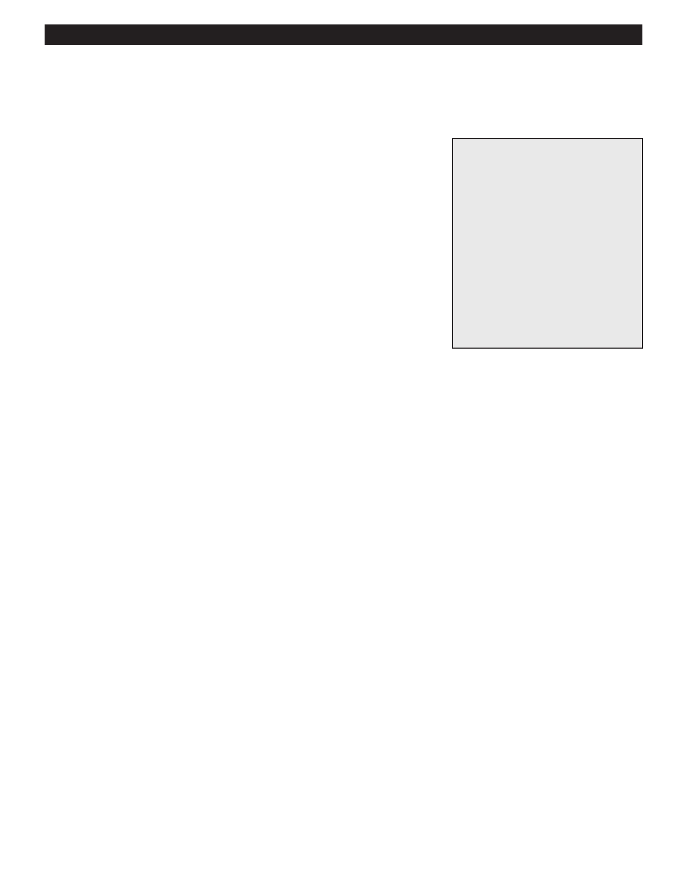

PA RT I C I PA N T R E S O U R C E G U I D E
Replacing a Three-way Wall Switch (30 minutes)
If your continuity test shows that the three-way wall switch is bad, replace it.
Safety
Tools and Materials Needed
Make sure the power is off before you replace a three-way switch.
Three-way wall switch with the
Use lockout/tagout procedures.
same ratings as the old one
Lockout/tagout device
Use insulated tools.
Circuit tester or multimeter
Wear eye protection and rubber-soled shoes. Remove jewelry.
Insulated screwdriver
Masking tape
Pen
Insulated combination tool or
wire stripper
Insulated needlenose pliers
Wire connectors
How-to Steps
1. Locate the dark “common” screw terminal, and use masking tape to label the “common” wire attached to it.
2. If necessary, clip any damaged wires and strip them.
3. Connect the wires to a new three-way wall switch that has the same ratings.
a. Connect the common wire to the dark common screw terminal on the switch.
b. If the switch has a grounding screw, connect it to the circuit grounding wires with a pigtail.
4. Connect the remaining two circuit wires to the two screw terminals. (These wires are interchangeable and can be
connected to either terminal.)
5. Push the switch into the electrical box, tucking the wires in place. Screw the switch into place, making sure it is straight up
and down, and then put on the switch cover.
6. Return power to the circuit and test the wall switch to make sure it works.
Notes:
43